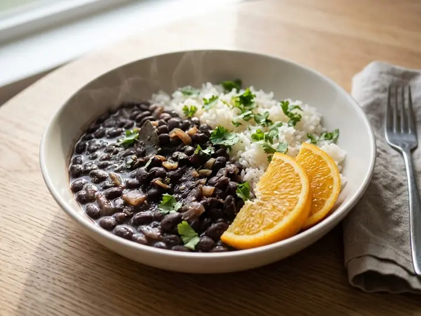

Brazil · Plant-based · No. 132
Brazilian-Style Black Bean & Rice Bowl
A single portion of Brazilian cooking, ready in 19 minutes with 7 minutes of prep. Vegan, and written for one, so there is nothing to halve.
Vegan
Method
- 1
Cook the rice according to the packet instructions.
- 2
Fry the onion and garlic in a splash of oil over medium heat for 4 minutes.
- 3
Add the black beans and a splash of water, and simmer for 6–7 minutes, mashing some of the beans for a thicker sauce.
- 4
Taste and adjust the seasoning.
- 5
Serve over the rice with the orange segments and coriander.